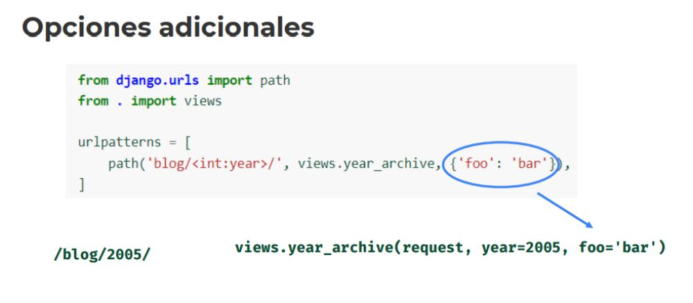

Desarrollo Django
1. Vistas Parametrizadas
2. path()
Ahora vamos a retomar las urls.. django.urls:
path()
- path(ruta, vista, kwargs= Ninguno, nombre = Ninguno )
El argumento ruta debe ser una cadena de texto que contenga un patrón de URL.
* Disponibles por defecto:
- path
-str
-int
-slug -> Palabras seguidas de guiones "building-a-django-site", es un identificador de palabras
-uuid
* Es importante el registro de las urls.. Lo más importante*
3. re_path()
re_path()
- re_path(ruta, vista, kwargs= Ninguno, nombre = Ninguno)
El argumento ruta debe ser una cadena de texto que contenga una EXPRESIÓN REGULAR compatible con el móduglo RE de python.
include()
- include(modulgo, espacio de nombres = Ninguno) [fuente]
include(lista_patrones)
include((lista_patrones, espacio_de_nombres de la aplicacion), espacio de nombres = Ninguno)
----------------------- Ejemplo:
Diferenciar el request.method .. GET Y POST
Para esta ruta..
path('proyectos/< int:anio>/< int:mes>', views.ver_proyecto, name="ver_proyectos"), -> El parámetro es un anio y mes
localhos:800/proyectos/2009/09 -> Al acceder a esa ruta..
Armamos la vista de esa ruta.. La función ver_proyectos
def ver_proyectos(request, anio, mes):
return HttpResponse (f"""
< h1> Proyectos del - {mes}/{anio}< /h1> -> Armamos la vista
< p>Listado de Proyectos< /p>
""")
4. Opciones adicionales

----------------------- Ahora con Regular expressions
parametro
nombre del parametro
\w expresion regular, una palabra de varios caracteres
cursos/ñlñásd
re_path(r'^cursos/(?P< nombre>\w+)/$', views.cursos, name='cursos'),
con la r y la ' comenzamos la expresion regular..
finaliza con '
localhos:800/cursos/django/ -> Al acceder a esa ruta..
Ahora desde la views.py.. Armamos la función cursos
def cursos(request, nombre):
return HttpResponse(f'{nombre}')
----------------------- Ahora con slug
cursos -> detalles
/armamos de acuerdo al modelo o a la clase a laburar.. 1 -> n
path('cursos/detalle/', -> Con el slug hacemos las uris más amigables..
views.curso_detalle, name="curso_detalle"), - EL slug son simples palabras seguidas de guiones.
localhos:800/cursos/detalle/cac-django-2022-2c -> Al acceder a esa ruta..
def curso_detalle(request, nombre_curso):
return HttpResponse(f'{nombre_curso}')
----------------------- Ahora para redireccionar..
path('proyectos/2022/09/', views.proyectos_2022_09, name='proyectos-2022-09'),
En el views armamos la función proyectos_2022_09
from django.urls import reverse -> Importamos el reverse
def proyectos_2022_09(request):
return redirect(reverse('saludar_por_defecto')) -> Usamos el redirect.. Para la ir la función de saludar_por_defecto
-> Esta es el name que se encuentra dentro de la path('', views, name='ESTE NAME')
- Es decir con el reverse buscamos el name, asociado al path
-----------------------
Antes solo usaba url().. Ahora se divide path o en re_path
-----------------------
from django.shortcuts import render, redirect
def index(request):
if (request.method == 'GET'):
titulo = 'Titulo cuando accedo por get'
else:
titulo = f'Titulo cuando accedo por otro metodo'
parameters_get = request.GET.get('algo')
return render(request, 'index.html', {'titulo': titulo, 'parametro': parameters_get}) -> Uso del template a trvés del render y el contexto con el uso de variables.
5. Nombrando patrones de URL
6. Analizando el HttpRequest
7. Códigos de Respuesta HTTP
8. Respuesta con HTML